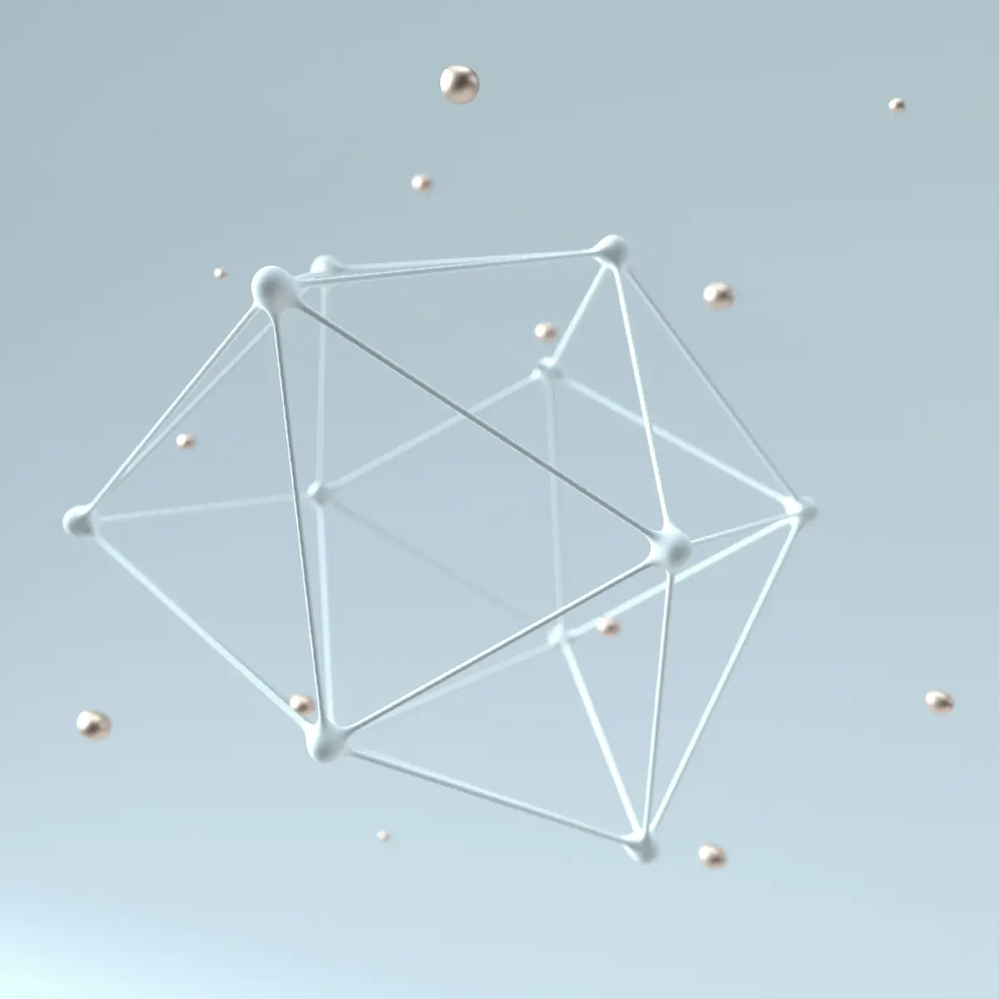

Cierpisz z powodu bólu?
Dowiedz się więcej
Skontaktuj się!
Ból stawów, poranna sztywność, "trzeszczenie" w kolanach czy ograniczona ruchomość to problemy, które potrafią odebrać radość z codziennych aktywności. Wiemy, jak frustrujące jest, gdy ból utrudnia wejście po schodach czy spacer z bliskimi. Wiele osób obawia się, że jedynym rozwiązaniem jest operacja, jednak współczesna medycyna bólu oferuje małoinwazyjne metody, które mogą skutecznie oddalić taką konieczność.
Aby zrozumieć działanie tej terapii, warto wyobrazić sobie staw jako precyzyjny mechanizm. Kwas hialuronowy pełni w nim rolę „smaru” oraz amortyzatora, który chroni powierzchnie stawowe przed tarciem. Z kolei kolagen to „rusztowanie” – białko, które odpowiada za wytrzymałość i elastyczność chrząstki, ścięgien oraz więzadeł.
Z wiekiem lub na skutek urazów, ilość tych substancji w organizmie drastycznie spada. Terapia wiskosuplementacji (podanie kwasu hialuronowego) często łączona z iniekcjami kolagenowymi ma na celu:
Uzupełnienie ubytków mazi stawowej (poprawa „ślizgu” w stawie).
Wsparcie regeneracji uszkodzonych struktur tkankowych.
Ochronę mechaniczną przed dalszym zużyciem chrząstki.
Jest to metoda o udowodnionym profilu bezpieczeństwa, która działa miejscowo – dokładnie tam, gdzie występuje problem, minimalizując obciążenie całego organizmu lekami przeciwbólowymi.
Terapia skojarzona lub oddzielne podawanie tych preparatów jest zalecane osobom, które chcą uniknąć inwazyjnych zabiegów chirurgicznych lub pragną wspomóc proces rehabilitacji.
Główne wskazania obejmują:
Chorobę zwyrodnieniową stawów (osteoartroza) – szczególnie kolan, bioder, barków oraz drobnych stawów rąk i stóp.
Chondromalację rzepki (rozmiękanie chrząstki).
Bóle przeciążeniowe u sportowców i osób aktywnych fizycznie.
Stany po urazach, skręceniach i operacjach ortopedycznych (jako wsparcie gojenia).
Ograniczoną ruchomość stawów połączoną z dolegliwościami bólowymi.
W Portal Edukacyjny KOI (Warszawa) dbamy o to, aby cały proces był dla pacjenta jak najmniej stresujący i bezpieczny. Procedurę wykonują doświadczeni lekarze, często pod kontrolą USG, co zapewnia precyzyjne podanie preparatu w szczelinę stawową.
Przebieg wizyty:
Kwalifikacja: Lekarz bada staw i analizuje historię choroby, aby dobrać odpowiedni rodzaj preparatu (np. o odpowiedniej gęstości usieciowania).
Przygotowanie: Skóra w miejscu iniekcji jest dokładnie dezynfekowana.
Znieczulenie: W razie potrzeby stosujemy znieczulenie miejscowe (np. w sprayu lub zastrzyku), choć sam zabieg jest zazwyczaj mało bolesny.
Iniekcja: Lekarz wprowadza cienką igłę i deponuje preparat wewnątrz stawu lub w okolicę uszkodzonej tkanki. Całość trwa zaledwie kilka minut.
Zalecenia: Po zabiegu pacjent może wrócić do domu, otrzymując instrukcje dotyczące oszczędzania stawu przez najbliższe 24-48 godzin.
Choć każdy organizm reaguje nieco inaczej, celem terapii jest znacząca poprawa jakości życia pacjenta. Warto pamiętać, że pełny efekt terapeutyczny może pojawić się po kilku dniach lub po wykonaniu serii zabiegów (zależnie od wybranego preparatu).
Czego możesz się spodziewać?
Redukcja bólu: Zmniejszenie tarcia w stawie naturalnie łagodzi dolegliwości.
Zwiększenie zakresu ruchu: Staw pracuje płynniej, co ułatwia codzienne funkcjonowanie.
Mniejsze zapotrzebowanie na leki: Wielu pacjentów może zredukować dawki doustnych środków przeciwbólowych, które obciążają żołądek.
Spowolnienie procesu degeneracji: Regularne stosowanie kwasu hialuronowego i kolagenu może opóźnić postęp zmian zwyrodnieniowych.
Mimo że kwas hialuronowy i kolagen są substancjami biokompatybilnymi (naturalnie występującymi w organizmie), istnieją sytuacje, w których zabieg nie może zostać wykonany. Bezpieczeństwo pacjenta jest dla nas priorytetem.
Przeciwwskazania to m.in.:
Aktywne infekcje skóry w miejscu planowanego wkłucia.
Ogólnoustrojowa infekcja z gorączką.
Stwierdzona nadwrażliwość na składniki preparatu (np. białko ptasie w niektórych preparatach kwasu hialuronowego – choć w KOI stosujemy nowoczesne preparaty syntetyczne).
Zaburzenia krzepnięcia krwi (wymagają konsultacji).
Procedura jest porównywalna do zwykłego zastrzyku domięśniowego. Większość pacjentów odczuwa jedynie lekkie rozpieranie w trakcie podawania preparatu. W przypadku osób wrażliwych na ból stosujemy znieczulenie miejscowe, aby zapewnić maksymalny komfort.
Zależy to od stopnia zaawansowania choroby oraz rodzaju użytego preparatu. Istnieją preparaty jednodawkowe (jeden zastrzyk na 6-12 miesięcy) oraz serie 3-5 zastrzyków wykonywanych w odstępach tygodniowych. Lekarz podczas wizyty dobierze optymalny schemat leczenia.
Tak, zabieg nie wyłącza z codziennego funkcjonowania. Zalecamy jednak unikanie intensywnego wysiłku fizycznego, biegania czy dźwigania ciężarów przez około 2-3 dni po iniekcji, aby dać preparatowi czas na właściwe rozmieszczenie się w stawie.